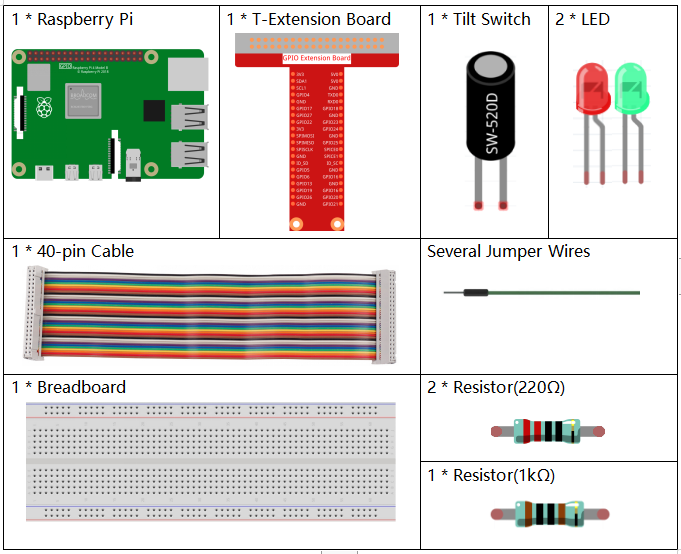
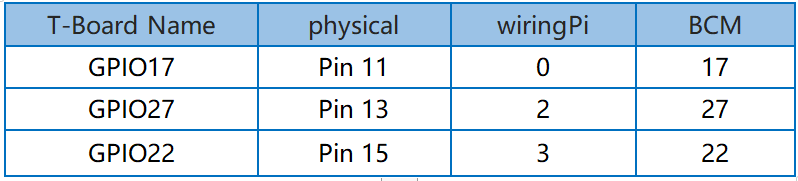
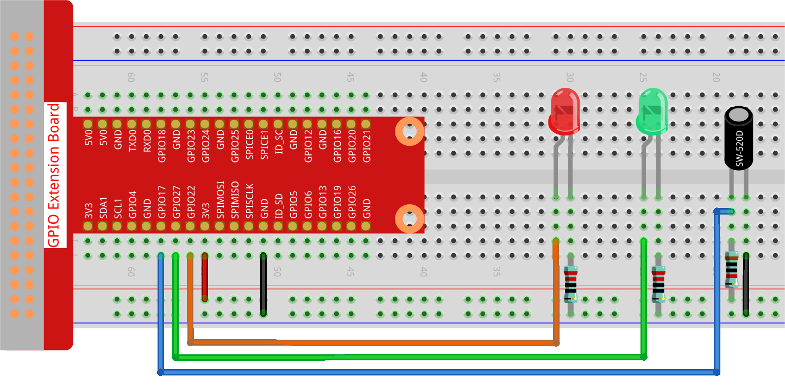

Nota
Ciao e benvenuto nella Community di Appassionati di SunFounder per Raspberry Pi, Arduino ed ESP32 su Facebook! Esplora a fondo il mondo di Raspberry Pi, Arduino ed ESP32 insieme a tanti altri appassionati.
Perché Unirsi?
Supporto da Esperti: Risolvi problemi post-vendita e sfide tecniche con l’aiuto della nostra community e del nostro team.
Impara e Condividi: Scambia consigli e tutorial per migliorare le tue competenze.
Anteprime Esclusive: Ottieni accesso anticipato agli annunci dei nuovi prodotti e a contenuti inediti.
Sconti Speciali: Approfitta di sconti esclusivi sui nostri prodotti più recenti.
Promozioni Festive e Giveaway: Partecipa a concorsi e promozioni festive.
üëâ Pronto a esplorare e creare con noi? Clicca su [Qui] e unisciti oggi stesso!
2.1.3 Interruttore a Inclinazione
Introduzione
Questo è un tilt-switch a sfera con una piccola sfera metallica al suo interno. Viene utilizzato per rilevare inclinazioni di piccolo angolo.
Componenti Necessari
In questo progetto, abbiamo bisogno dei seguenti componenti.
Schema Elettrico

Procedure Sperimentali
Passo 1: Costruisci il circuito.
Passo 2: Cambia directory.
cd ~/davinci-kit-for-raspberry-pi/python-pi5
Passo 3: Esegui.
sudo python3 2.1.3_Tilt.py
Posiziona il tilt-switch in verticale e il LED verde si accenderà. Se lo inclini, verrà stampato «Tilt!» sullo schermo e il LED rosso si accenderà. Riporta il tilt-switch in posizione verticale e il LED verde si riaccenderà.
Avvertimento
Se compare l’errore RuntimeError: Cannot determine SOC peripheral base address, consulta Se gpiozero non funziona.
Codice
Nota
Puoi Modificare/Reimpostare/Copiare/Eseguire/Interrompere il codice qui sotto. Prima di farlo, però, vai al percorso del codice sorgente, come davinci-kit-for-raspberry-pi/python-pi5. Dopo aver modificato il codice, potrai eseguirlo direttamente per vedere il risultato.
#!/usr/bin/env python3
from gpiozero import LED, Button
# Inizializza il Button per il sensore di inclinazione e i LED con GPIO Zero
TiltPin = Button(17, pull_up=False) # Sensore di inclinazione connesso al pin GPIO 17, pull-up disabilitato
green_led = LED(27) # LED verde connesso al pin GPIO 27
red_led = LED(22) # LED rosso connesso al pin GPIO 22
def detect():
"""
Detect the tilt sensor state and control the LEDs.
Turns on the red LED and turns off the green LED when tilted.
Turns off the red LED and turns on the green LED when not tilted.
"""
if TiltPin.is_pressed: # Controlla se il sensore è inclinato
print(' *************')
print(' * Tilt! *')
print(' *************')
red_led.on() # Accende il LED rosso
green_led.off() # Spegne il LED verde
else: # Se il sensore non è inclinato
red_led.off() # Spegne il LED rosso
green_led.on() # Accende il LED verde
try:
while True:
# Controlla continuamente lo stato del sensore di inclinazione e aggiorna i LED
TiltPin.when_pressed = detect
TiltPin.when_released = detect
except KeyboardInterrupt:
# Gestisce l'interruzione da tastiera (Ctrl+C) per uscire dal ciclo in modo pulito
pass
Spiegazione del Codice
Questa riga imposta lo script per l’esecuzione con Python 3 e importa
LEDeButtondagpiozeroper controllare i dispositivi GPIO.#!/usr/bin/env python3 from gpiozero import LED, Button
Inizializza il sensore di inclinazione collegato al pin GPIO 17 (con il pull-up disabilitato) e due LED collegati ai pin GPIO 27 e 22.
# Inizializza il Button per il sensore di inclinazione e i LED con GPIO Zero TiltPin = Button(17, pull_up=False) # Sensore di inclinazione connesso al pin GPIO 17, pull-up disabilitato green_led = LED(27) # LED verde connesso al pin GPIO 27 red_led = LED(22) # LED rosso connesso al pin GPIO 22
Definisce la funzione
detect, che controlla lo stato del sensore di inclinazione. Se inclinato, accende il LED rosso e spegne il LED verde. Se non inclinato, compie l’operazione inversa.def detect(): """ Detect the tilt sensor state and control the LEDs. Turns on the red LED and turns off the green LED when tilted. Turns off the red LED and turns on the green LED when not tilted. """ if TiltPin.is_pressed: # Controlla se il sensore è inclinato print(' *************') print(' * Tilt! *') print(' *************') red_led.on() # Accende il LED rosso green_led.off() # Spegne il LED verde else: # Se il sensore non è inclinato red_led.off() # Spegne il LED rosso green_led.on() # Accende il LED verde
Il ciclo principale assegna la funzione
detectagli eventiwhen_pressedewhen_releaseddel sensore di inclinazione. Il bloccotry-exceptgestisce un’interruzione da tastiera per una chiusura sicura.try: while True: # Controlla continuamente lo stato del sensore di inclinazione e aggiorna i LED TiltPin.when_pressed = detect TiltPin.when_released = detect except KeyboardInterrupt: # Gestisce l'interruzione da tastiera (Ctrl+C) per uscire dal ciclo in modo pulito pass